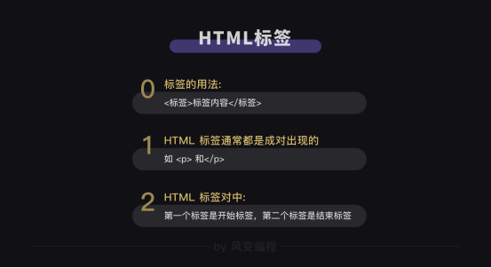
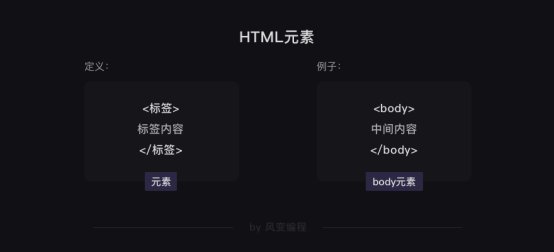
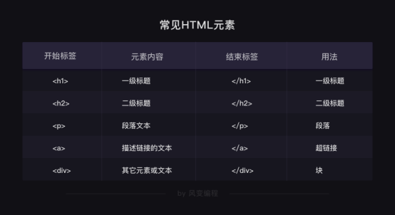
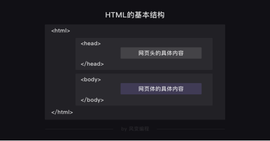
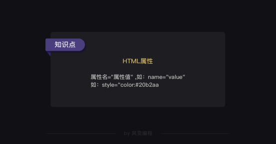
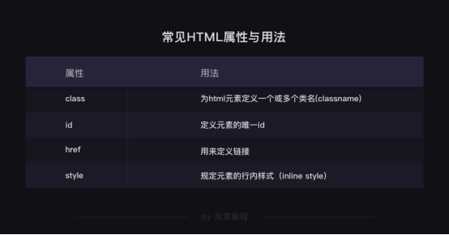
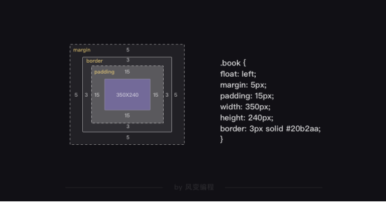
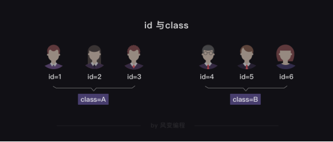
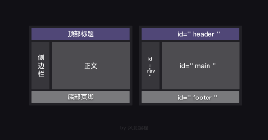

原文连接:https://www.cnblogs.com/CH-TNT/p/11438495.html
HTML基础
HTML（Hyper Text Markup Language）超文本标记语言
#HTML是一种用来描述网页的语言，HTML之于网页就好比建筑图纸之于建筑
+++++++++++++++++++++++++++++++++++++++++++++++++++++++++++++++++++++++++++++
查看网页HTML代码
#源代码和网页分开在两个页面展示
在网页任意地方点击鼠标右键，然后点击“显示网页源代码”。
（Windows系统的电脑还可以使用快捷键ctrl+u来查看网页源代码）
#源代码和网页在一个页面展示
在网页的空白处点击右键，然后选择“检查”（快捷方式是ctrl+shift+i）或者F12
+++++++++++++++++++++++++++++++++++++++++++++++++++++++++++++++++++++++++++++++
HTML的层级
HTML源代码中有一些小三角形，每一个三角形都可以展开或合上。
尖角向下代表展开，向右代表合上了，这就是HTML的层级关系
+++++++++++++++++++++++++++++++++++++++++++++++++++++++++++++++++++++++++++
HTML的组成
标签和元素



尖括号<>中间的字母，它们叫做【标签】
成对出现
前面的是【开始标签】，比如<body>；
后面的是【结束标签】，如</body>
有标签是形单影只地出现
<meta charset="utf-8">（定义网页编码格式为 utf-8）
#HTML标签是可以嵌套标签的，而且可以多层嵌套；
这就像是在电脑中，一个硬盘可以包含数个文件夹，文件夹中还可以嵌套文件夹。
开始标签+结束标签+中间的所有内容，它们在一起就组成了【元素】。
######################################################################
网页头和网页体

HTML文档的基本是由【网页头】和【网页体】组成
【网页头】的内容不会被直接呈现在浏览器里的网页正文中
【网页体】的内容是会直接显示在网页正文中的
属性
 
style属性
<h1 style="color:#20b2aa;">这个书苑不太冷</h1>
属性通常都是在HTML元素的开始标签中设置
style属性可以用来定义网页文本的样式，比如字体大小、颜色、间距、对齐方式等等
href属性
添加链接
<a href="https://wordpress-edu-3autumn.localprod.forc.work/">我是一个链接，点我试试</a>
链接一般都由<a>标签定义，href属性用于规定指向页面的URL
class属性
在HTML中，class属性也可以被多次利用
<style>
.book {
/*以下是.book的具体样式规定*/
float: left; /*控制元素浮动*/
margin: 5px; /*外边距为5像素*/
padding: 15px; /*内边距为15像素*/
width: 350px; /*宽度为350像素*/
height: 240px; /*高度为240像素*/
border: 3px solid #20b2aa; /*边框为3像素*/
}
</style>

.对应class，所以.book代表class book
网页头中的.book和网页体中的class="book"是有联系
网页头里面，定义了class属性，属性值为"book"
下面一长串代码是对这个class属性的描述
再在网页体中调用，所以看到了<div class="book">
id属性
和class属性的用法类似，
给元素定义id和class的目的都是为了查找、定位元素，或者为元素设置样式
区别
id属性用于标识唯一的元素(id就像是学生的学生证号码，每个人都是唯一的)
class用于标识一系列的元素(而学生们可以属于同一个班级，班级就像class)

####################################################################


获取数据
import requests
res = requests.get('https://localprod.pandateacher.com/python-manuscript/crawler-html/spider-men5.0.html')
url = res.text
k = open('url.txt', 'w')
k.write(url)
k.close()